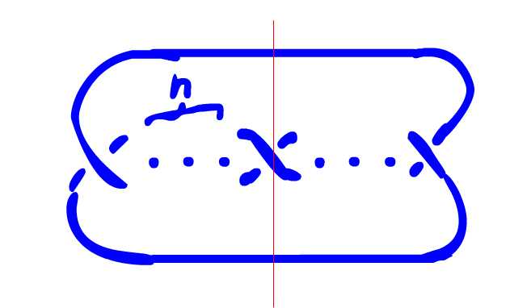

Quotient Tangles of $(2, 2n + 1)$ Torus Knots
where $n$ is the number of twists in the designated region
Knot and Strong involution pairs in family: 3_1, 5_1, 7_1
 {% include header.html %} {% for i in (1..5) %} $n = {{i}}$
{% assign j = i | times: 2 | plus: 1 %}
Original Tangle
{% include 3_1-family_{{i}}.html %}
'Small Arc' Tangle
{% include 3_1-family_{{i}}_small.html %}
{% endfor %}